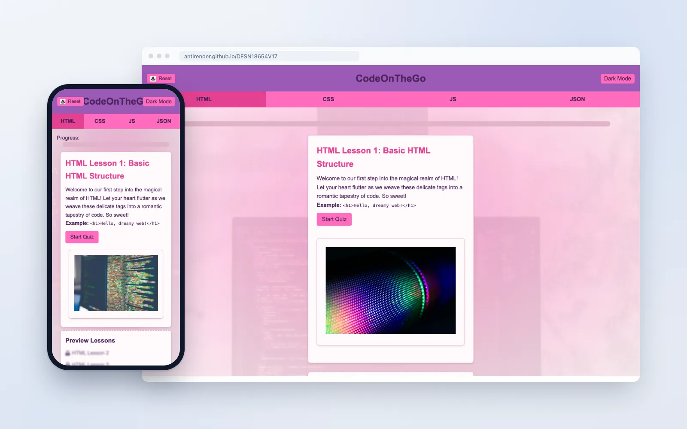
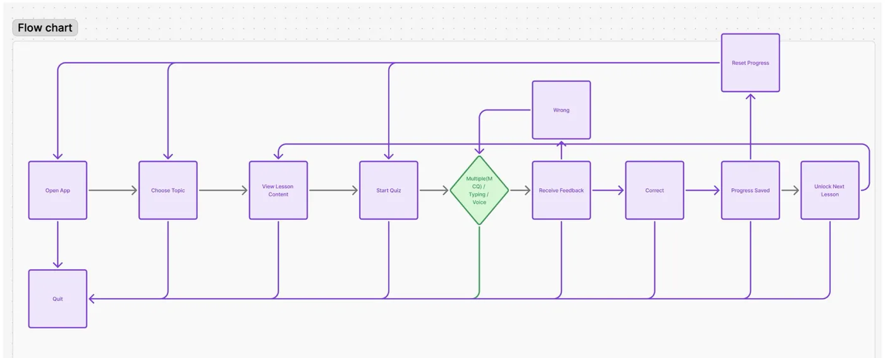
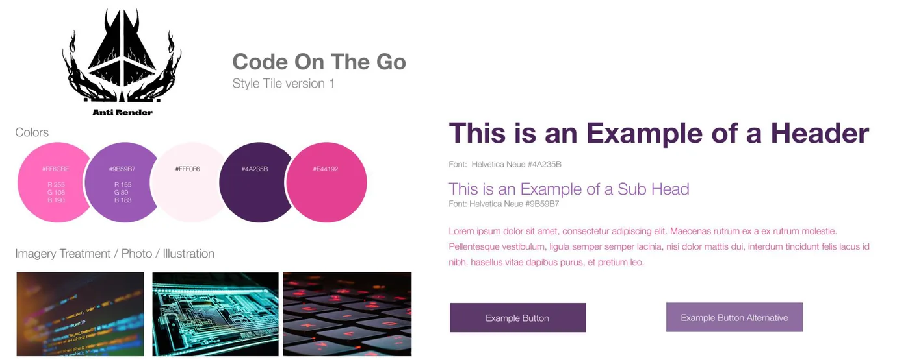
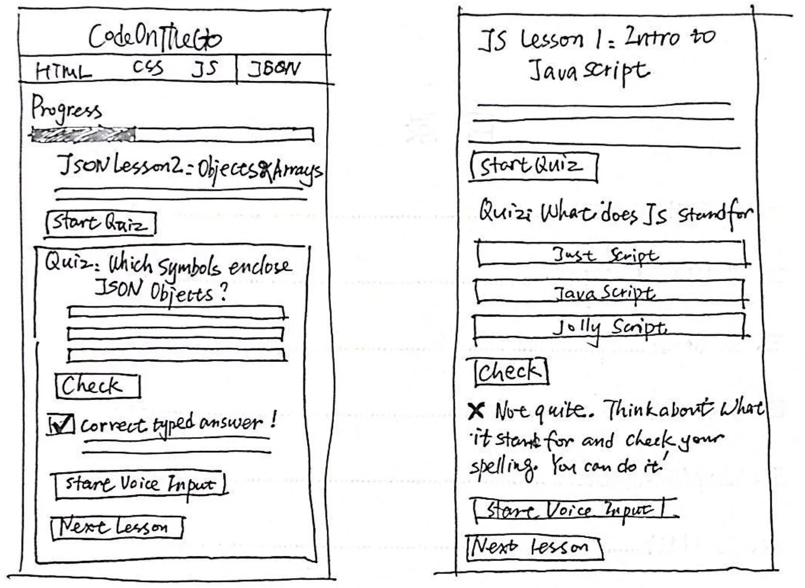
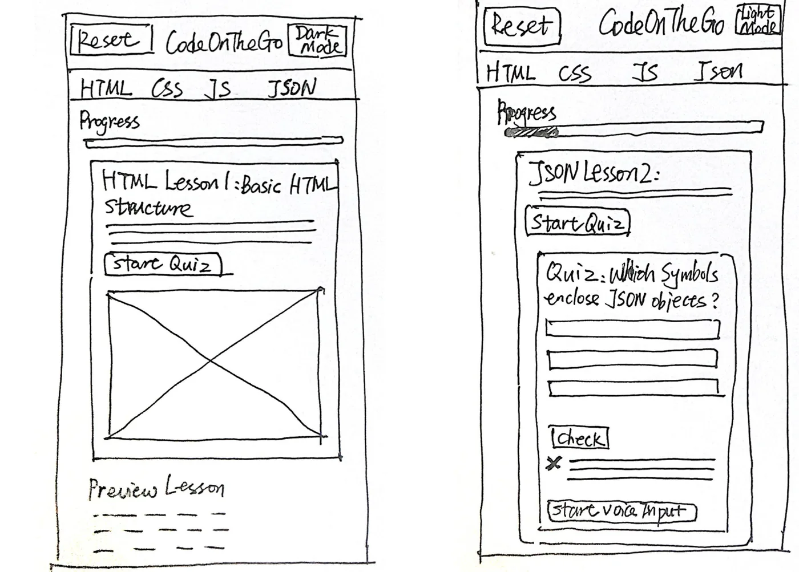
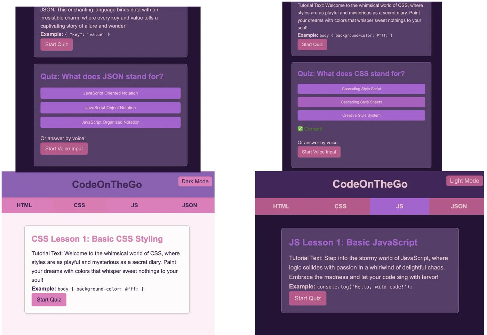
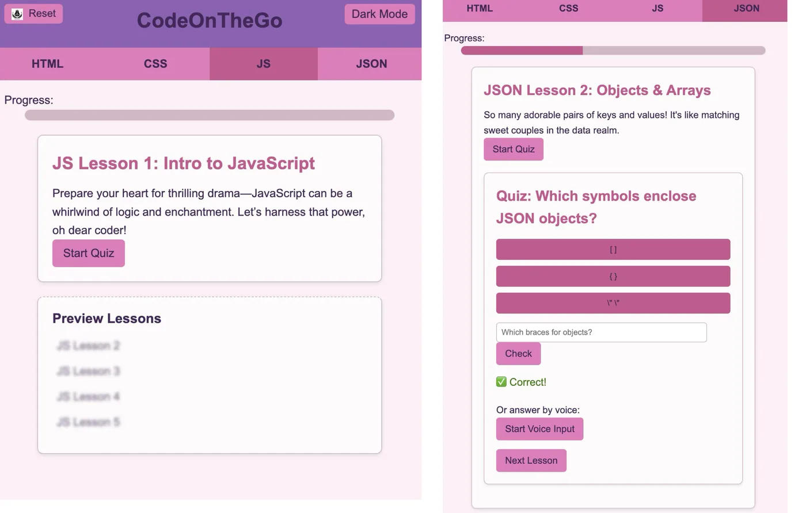
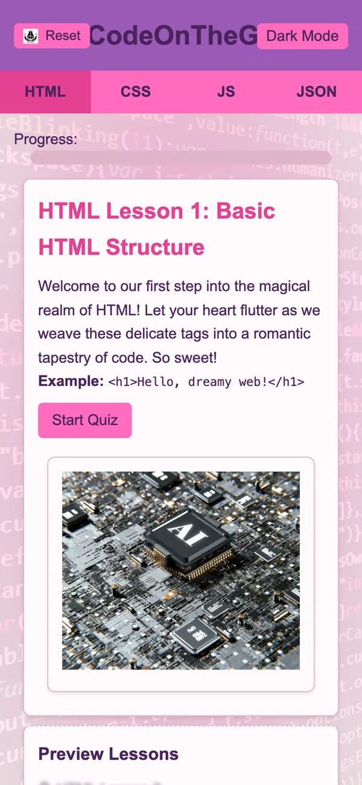
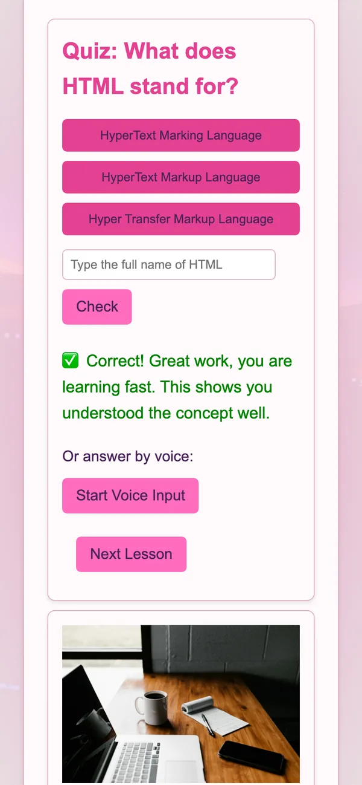
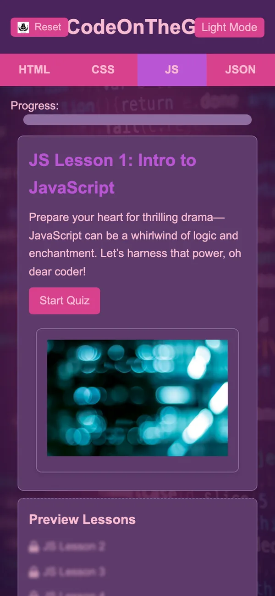

At a glance一览一覽概要En brefAuf einen Blick
- Problem问题問題課題ProblèmeProblem
- Coding tutorials are long and dense, and typing on a phone is slow.编程教程又长又密，在手机上打字也很慢。程式設計教學又長又密，在手機上打字也很慢。プログラミングの教材は長くて情報が多く、スマホでの入力にも時間がかかります。Les tutoriels de code sont longs et denses, et taper sur un téléphone prend du temps.Programmier-Tutorials sind lang und dicht, und Tippen auf dem Handy ist langsam.
- What I built主要功能主要功能作ったものCe que j’ai crééWas ich gebaut habe
- 20 lessons and 20 quizzes, voice answers, swipe navigation, dark mode and progress that saves itself.20 节课和 20 个小测验、语音回答、滑动切换、深色模式、自动保存进度。20 節課和 20 個小測驗、語音回答、滑動切換、深色模式、自動儲存進度。20 のレッスンと 20 のクイズ、音声回答、スワイプ操作、ダークモード、進捗の自動保存。20 leçons et 20 quiz, des réponses vocales, une navigation par balayage, un mode sombre et une progression enregistrée automatiquement.20 Lektionen und 20 Quizze, Sprachantworten, Wischnavigation, Dunkelmodus und automatisch gespeicherter Fortschritt.
- Tools工具工具ツールOutilsWerkzeuge
- Figma, HTML, CSS, JavaScript, Hammer.js for swipe gestures, Web Speech API for voice answersFigma、HTML、CSS、JavaScript、Hammer.js（滑动手势）、Web Speech API（语音回答）Figma、HTML、CSS、JavaScript、Hammer.js（滑動手勢）、Web Speech API（語音回答）Figma、HTML、CSS、JavaScript、Hammer.js（スワイプ操作）、Web Speech API（音声回答）Figma, HTML, CSS, JavaScript, Hammer.js pour les gestes de balayage, Web Speech API pour les réponses vocalesFigma, HTML, CSS, JavaScript, Hammer.js für Wischgesten, Web Speech API für Sprachantworten

Problem问题問題課題ProblèmeProblem
Coding tutorials are too long and too dense to use on a phone.编程教程太长太密，在手机上很难学下去。程式設計教學太長太密，在手機上很難學下去。プログラミングの教材は長くて情報が多く、スマホでは続けにくい。Les tutoriels de code sont trop longs et trop denses pour un téléphone.Programmier-Tutorials sind zu lang und zu dicht fürs Handy.
The beginners I worked with felt overwhelmed by dense tutorials and wanted to study in short gaps during the day. My goal: one lesson should fit into a 15-minute break.
和我一起测试的初学者觉得教程内容太密，想利用一天里的碎片时间学习。我的目标是：一节课能在 15 分钟的休息时间里学完。
和我一起測試的初學者覺得教學內容太密，想利用一天裡的零碎時間學習。我的目標是：一節課能在 15 分鐘的休息時間裡學完。
一緒にテストした初心者は、情報の多い教材に圧倒され、1 日のすき間時間に学びたいと考えていました。目標は、1 つのレッスンを 15 分の休憩で終えられるようにすることです。
Les débutants avec qui j’ai travaillé se sentaient submergés par les tutoriels denses et voulaient apprendre dans les petits moments libres de la journée. Mon objectif : une leçon doit tenir dans une pause de 15 minutes.
Die Einsteiger, mit denen ich gearbeitet habe, fühlten sich von dichten Tutorials überfordert und wollten in kurzen Pausen lernen. Mein Ziel: Eine Lektion passt in eine 15-Minuten-Pause.
Users用户使用者ユーザーUtilisateursNutzer
I designed for two people who learn in short breaks.我为两位利用碎片时间学习的人做设计。我為兩位利用零碎時間學習的人做設計。すき間時間に学ぶ 2 人のためにデザインしました。J’ai conçu l’application pour deux personnes qui apprennent pendant leurs pauses.Ich habe für zwei Menschen gestaltet, die in kurzen Pausen lernen.
- Alex Chen, 29, is a former barista moving into front-end development. He uses any 15-minute window to practise and wants instant feedback.
- Jamie Zhang, 21, is a second-year digital arts student with limited coding experience. She learns on her subway commute, and visuals and fast interaction keep her engaged.
- Alex Chen，29 岁，做过咖啡师，正在转行做前端开发。他抓住每个 15 分钟的空档练习，希望马上知道答案对错。
- Jamie Zhang，21 岁，数字艺术专业二年级学生，编程经验不多。她在地铁通勤时学习，图像和快速的互动能让她保持投入。
- Alex Chen，29 歲，做過咖啡師，正在轉行做前端開發。他抓住每個 15 分鐘的空檔練習，希望馬上知道答案對錯。
- Jamie Zhang，21 歲，數位藝術專業二年級學生，程式設計經驗不多。她在地鐵通勤時學習，影象和快速的互動能讓她保持投入。
- Alex Chen（29 歳）は元バリスタで、フロントエンド開発への転身を目指しています。15 分のすき間があれば練習し、すぐに結果を知りたいと考えています。
- Jamie Zhang（21 歳）はデジタルアートを学ぶ 2 年生で、コーディングの経験はあまりありません。地下鉄の通勤中に学び、ビジュアルと素早い操作が集中を支えます。
- Alex Chen, 29 ans, ancien barista, se reconvertit dans le développement front-end. Il profite de chaque créneau de 15 minutes pour s’entraîner et veut un retour immédiat.
- Jamie Zhang, 21 ans, étudiante en deuxième année d’arts numériques, a peu d’expérience en code. Elle apprend dans le métro, et les visuels et les interactions rapides l’aident à rester concentrée.
- Alex Chen, 29, ehemaliger Barista, wechselt in die Frontend-Entwicklung. Er nutzt jedes 15-Minuten-Fenster zum Üben und will sofort Rückmeldung.
- Jamie Zhang, 21, studiert digitale Kunst im zweiten Jahr und hat wenig Programmiererfahrung. Sie lernt auf dem Weg in der U-Bahn, Bilder und schnelle Interaktion halten sie bei der Sache.


Research调研研究リサーチRechercheRecherche
People wanted short lessons and less typing.大家想要短课，也想少打字。大家想要短課，也想少打字。求められていたのは、短いレッスンと少ない入力でした。Les gens voulaient des leçons courtes et moins de saisie.Gewünscht waren kurze Lektionen und weniger Tippen.
I watched a student use their phone on transit and tested early ideas with 2 beginners. Two findings drove the design:
我观察了一位学生在通勤时怎么用手机，又请 2 位初学者测试了早期想法。两个发现决定了设计：
我觀察了一位學生在通勤時怎麼用手機，又請 2 位初學者測試了早期想法。兩個發現決定了設計：
通勤中の学生のスマホの使い方を観察し、初心者 2 人に初期案を試してもらいました。2 つの発見がデザインを決めました。
J’ai observé une personne étudiante utiliser son téléphone dans les transports et testé les premières idées avec 2 débutants. Deux constats ont guidé le design :
Ich habe beobachtet, wie eine studierende Person ihr Handy unterwegs nutzt, und frühe Ideen mit 2 Einsteigern getestet. Zwei Erkenntnisse prägten das Design:
- Dense tutorials overwhelmed them, so each screen teaches one concept.
- Typing on a phone was a chore, so every quiz also takes taps and voice answers.
- 内容太密会让人吃不消，所以每一屏只讲一个知识点。
- 在手机上打字很麻烦，所以每个小测验都能点选，也能用语音回答。
- 內容太密會讓人吃不消，所以每一屏只講一個知識點。
- 在手機上打字很麻煩，所以每個小測驗都能點選，也能用語音回答。
- 情報の多い教材は負担になる。そこで 1 画面に 1 つの概念だけを載せました。
- スマホでの入力は面倒。そこでどのクイズもタップと音声で答えられるようにしました。
- Les tutoriels denses les submergeaient : chaque écran enseigne donc une seule notion.
- Taper sur un téléphone était une corvée : chaque quiz accepte donc aussi les appuis et la voix.
- Dichte Tutorials überforderten sie, also vermittelt jeder Bildschirm genau ein Konzept.
- Tippen auf dem Handy war mühsam, also nimmt jedes Quiz auch Antippen und Sprache an.
Design decisions设计决策設計決策デザインの判断Décisions de designDesignentscheidungen
One lesson per screen, instant feedback, three ways to answer.一屏一课，即时反馈，三种回答方式。一屏一課，即時回饋，三種回答方式。1 画面 1 レッスン、すぐ返るフィードバック、3 通りの答え方。Une leçon par écran, un retour immédiat, trois façons de répondre.Eine Lektion pro Bildschirm, sofortiges Feedback, drei Antwortwege.
- One lesson, one screen. Large type and soft card borders. The quiz opens when you tap Start Quiz.
- Instant feedback. A green check or red cross with an encouraging message. The next lesson unlocks after a correct answer.
- Tap, type or speak. Every quiz has a Start Voice Input button, built with the Web Speech API.
- Progress saves itself. Lesson and quiz state stay in localStorage, so people pick up where they left off.
- Swipe between topics. Hammer.js moves people between HTML, CSS, JavaScript and JSON with one gesture.
- 一屏一课。大字号、柔和的卡片边框。点 Start Quiz 后展开小测验。
- 即时反馈。绿勾或红叉，加一句鼓励的话。答对后解锁下一节课。
- 点选、打字或说话。每个小测验都有 Start Voice Input 按钮，用 Web Speech API 实现。
- 进度自动保存。课程和小测验的状态存在 localStorage 里，下次打开接着学。
- 滑动切换主题。用 Hammer.js 实现，一个手势就能在 HTML、CSS、JavaScript 和 JSON 之间切换。
- 一屏一課。大字級、柔和的卡片邊框。點 Start Quiz 後展開小測驗。
- 即時回饋。綠勾或紅叉，加一句鼓勵的話。答對後解鎖下一節課。
- 點選、打字或說話。每個小測驗都有 Start Voice Input 按鈕，用 Web Speech API 實現。
- 進度自動儲存。課程和小測驗的狀態存在 localStorage 裡，下次開啟接著學。
- 滑動切換主題。用 Hammer.js 實現，一個手勢就能在 HTML、CSS、JavaScript 和 JSON 之間切換。
- 1 画面に 1 レッスン。大きな文字と柔らかなカードの枠線。クイズは Start Quiz を押すと開きます。
- すぐ返るフィードバック。緑のチェックか赤いバツに、励ましの一言。正解すると次のレッスンが開きます。
- タップ、入力、音声。どのクイズにも Web Speech API で作った Start Voice Input ボタンがあります。
- 進捗は自動で保存。レッスンとクイズの状態を localStorage に残すので、続きから再開できます。
- スワイプでトピックを切り替え。Hammer.js を使い、HTML、CSS、JavaScript、JSON を 1 つのジェスチャーで移動できます。
- Une leçon, un écran. Grands caractères et bordures douces. Le quiz s’ouvre quand on appuie sur Start Quiz.
- Retour immédiat. Une coche verte ou une croix rouge avec un mot d’encouragement. La leçon suivante se débloque après une bonne réponse.
- Appuyer, taper ou parler. Chaque quiz a un bouton Start Voice Input, construit avec la Web Speech API.
- La progression s’enregistre toute seule. L’état des leçons et des quiz reste dans le localStorage : on reprend là où on s’est arrêté.
- Balayer d’un sujet à l’autre. Avec Hammer.js, un geste suffit pour passer entre HTML, CSS, JavaScript et JSON.
- Eine Lektion, ein Bildschirm. Große Schrift und weiche Kartenränder. Das Quiz öffnet sich mit Start Quiz.
- Sofortiges Feedback. Ein grüner Haken oder ein rotes Kreuz mit einer aufmunternden Nachricht. Nach einer richtigen Antwort wird die nächste Lektion freigeschaltet.
- Antippen, tippen oder sprechen. Jedes Quiz hat einen Start-Voice-Input-Button, gebaut mit der Web Speech API.
- Der Fortschritt speichert sich selbst. Lektionen und Quizze bleiben im localStorage, man macht dort weiter, wo man aufgehört hat.
- Zwischen Themen wischen. Mit Hammer.js wechselt eine Geste zwischen HTML, CSS, JavaScript und JSON.


Process过程過程プロセスProcessusProzess
From paper sketches to seven coded versions.从纸面草图到七个代码版本。從紙面草圖到七個程式碼版本。紙のスケッチから、7 つのコード版へ。Des croquis papier à sept versions codées.Von Papierskizzen zu sieben programmierten Versionen.
I started with hand-drawn tabs and quiz blocks and tested them on paper. Testers asked for a reset button and dark mode, so I added both. Then I built mid- and high-fidelity prototypes and kept refining in code: v10–v12 tested navigation and card sizes; v13, v14 and v16 adjusted spacing, type and feedback; v17 finished the mobile layout.
我先手绘标签页和测验模块，用纸面原型做测试。测试者提出要重置按钮和深色模式，我都加上了。之后做了中保真和高保真原型，再继续在代码里调整：v10–v12 测试导航和卡片尺寸；v13、v14 和 v16 调整间距、字体和反馈；v17 完成移动端布局。
我先手繪標籤頁和測驗模組，用紙面原型做測試。測試者提出要重置按鈕和深色模式，我都加上了。之後做了中保真和高保真原型，再繼續在程式碼裡調整：v10–v12 測試導覽和卡片尺寸；v13、v14 和 v16 調整間距、字型和回饋；v17 完成行動裝置佈局。
手描きのタブとクイズのブロックから始め、紙のプロトタイプでテストしました。テスターからリセットボタンとダークモードの要望があり、両方とも追加しました。その後、中・高忠実度のプロトタイプを作り、コードで調整を続けました。v10〜v12 でナビゲーションとカードの大きさを試し、v13、v14、v16 で余白、文字、フィードバックを調整し、v17 でモバイルのレイアウトを仕上げました。
J’ai commencé par des onglets et des blocs de quiz dessinés à la main, testés sur papier. Les testeurs ont demandé un bouton de réinitialisation et un mode sombre : j’ai ajouté les deux. J’ai ensuite créé des prototypes moyenne et haute fidélité, puis affiné en code : v10–v12 pour tester la navigation et la taille des cartes ; v13, v14 et v16 pour ajuster les espacements, la typographie et les retours ; v17 pour finir la mise en page mobile.
Ich begann mit handgezeichneten Tabs und Quiz-Blöcken und testete sie auf Papier. Die Testpersonen wünschten sich einen Reset-Button und einen Dunkelmodus, also habe ich beides ergänzt. Danach baute ich Mid- und High-Fidelity-Prototypen und verfeinerte alles im Code: v10–v12 testeten Navigation und Kartengrößen; v13, v14 und v16 passten Abstände, Schrift und Feedback an; v17 schloss das mobile Layout ab.




Final app最终成品最終成品完成したアプリApplication finaleFertige App
A working app with 20 lessons, 20 quizzes, voice answers and dark mode.一个能用的应用：20 节课、20 个小测验、语音回答和深色模式。一個能用的應用：20 節課、20 個小測驗、語音回答和深色模式。動くアプリ：20 レッスン、20 クイズ、音声回答、ダークモード。Une application fonctionnelle : 20 leçons, 20 quiz, réponses vocales et mode sombre.Eine funktionierende App: 20 Lektionen, 20 Quizze, Sprachantworten und Dunkelmodus.
I coded the final build as a single-page app in HTML, CSS and JavaScript. It covers four topics with five lessons each and runs on phones and desktops. I also designed an App Store product page to present it.
最终版是我用 HTML、CSS 和 JavaScript 写的单页应用，有四个主题，每个主题五节课，手机和电脑上都能用。我还设计了一个 App Store 产品页来展示它。
最終版是我用 HTML、CSS 和 JavaScript 寫的單頁應用，有四個主題，每個主題五節課，手機和電腦上都能用。我還設計了一個 App Store 產品頁來展示它。
最終版は HTML、CSS、JavaScript で書いたシングルページアプリで、4 つのトピックにそれぞれ 5 レッスンがあり、スマホでもパソコンでも使えます。紹介用の App Store プロダクトページもデザインしました。
J’ai codé la version finale comme une application monopage en HTML, CSS et JavaScript. Elle couvre quatre sujets de cinq leçons chacun et fonctionne sur téléphone et sur ordinateur. J’ai aussi conçu une page produit App Store pour la présenter.
Die finale Version habe ich als Single-Page-App in HTML, CSS und JavaScript programmiert. Sie umfasst vier Themen mit je fünf Lektionen und läuft auf Handy und Desktop. Zur Präsentation habe ich außerdem eine App-Store-Produktseite gestaltet.



Next steps下一步下一步次のステップProchaines étapesNächste Schritte
Next: search, accounts and a code editor inside each lesson.下一步：搜索、账号，以及课程内的代码编辑器。下一步：搜尋、帳號，以及課程內的程式碼編輯器。次は、検索、アカウント、レッスン内のコードエディター。Ensuite : la recherche, les comptes et un éditeur de code dans chaque leçon.Als Nächstes: Suche, Konten und ein Code-Editor in jeder Lektion.
Accounts would let progress follow people across devices, and an editor would let them write real code. My testing so far is small, 2 beginners and 1 observed student, so I would also test with more people.
账号能让进度跟着人走，编辑器能让用户写真正的代码。目前的测试规模还小，是 2 位初学者和 1 位被观察的学生，所以我还会找更多人来测试。
帳號能讓進度跟著人走，編輯器能讓使用者寫真正的程式碼。目前的測試規模還小，是 2 位初學者和 1 位被觀察的學生，所以我還會找更多人來測試。
アカウントがあれば進捗を端末をまたいで引き継げ、エディターがあれば実際にコードを書けます。これまでのテストは初心者 2 人と観察した学生 1 人と小規模なので、より多くの人でも試したいと考えています。
Les comptes permettraient de retrouver sa progression sur tous ses appareils, et l’éditeur d’écrire du vrai code. Mes tests restent modestes, 2 débutants et 1 personne observée : je testerais aussi avec plus de monde.
Konten nehmen den Fortschritt über Geräte hinweg mit, und ein Editor erlaubt echten Code. Meine Tests sind bisher klein, 2 Einsteiger und 1 beobachtete Person, also würde ich auch mit mehr Menschen testen.
Icons: Font Awesome. Images: Unsplash. Code adapted from W3Schools, MDN and Weekly Tutorials. ChatGPT and Grammarly helped proofread the project documentation.
图标：Font Awesome。图片：Unsplash。部分代码改编自 W3Schools、MDN 和 Weekly Tutorials。项目文档用 ChatGPT 和 Grammarly 校对过。
圖示：Font Awesome。圖片：Unsplash。部分程式碼改編自 W3Schools、MDN 和 Weekly Tutorials。專案文件用 ChatGPT 和 Grammarly 校對過。
アイコン：Font Awesome。画像：Unsplash。コードは W3Schools、MDN、Weekly Tutorials を参考に改変しました。プロジェクト資料の校正に ChatGPT と Grammarly を使いました。
Icônes : Font Awesome. Images : Unsplash. Code adapté de W3Schools, MDN et Weekly Tutorials. ChatGPT et Grammarly ont servi à relire la documentation du projet.
Icons: Font Awesome. Bilder: Unsplash. Code angepasst von W3Schools, MDN und Weekly Tutorials. ChatGPT und Grammarly halfen beim Korrekturlesen der Projektdokumentation.